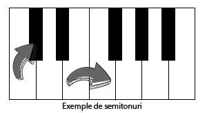
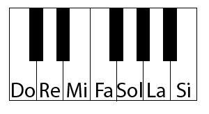

Scari muzicale
Scurtă definiție
În esență, o scară muzicală este orice set de note ordonate prin înălțime. Acestea variază prin numărul de note pe care le au (de la 12, numărul maxim, până doar la una) sau organizarea în ordine crescătoare sau descrescătoare a înălțimii.
Tonul și semitonul

Să definim că semiton cea mai mică distanță în înălțime posibilă între două note, distanța dintre două note alăturate. Să considerăm, de asemenea, noțiunea de ton, ca distanță de două semitonuri.
Notele muzicale pe care le folosim sunt structurate pe baza intervalelor. În general, între oricare două note în fredonarea gamei do major există o diferență de un ton, singurele excepții fiind între notele mi-fa și si-do, unde intervalul este de un semiton. Asta înseamnă că pentru restul notelor există o notă de trecere, care se află la jumtatea înălțimii dintre ele. Poate că este puțin încurcat, așa că voi încerca să dau o explicație mai bună.
 Acesta este modelul standard al unui pian. Știu că poate nu aveți un interes aparte pentru acest intrument, însă este (în opinia mea) cel mai bun mod de reprezentare a intervalelor muzicale.
Nota do este clapa albă de la începutul structurii de două clape negre. Mergând pe clapele albe, vom obține, rând pe rând, notele de la do, re, mi, fa, sol, la, si, do. Dacă va uitați între notele mi și fa, se poate observa că ele sunt complet adiacente, distanța dintre ele fiind, după cum am spus mai sus, de un semiton. Același lucru se întâmplă și pentru notele si do.
În rest, între oricare două clape negre există câte o clapă neagră, care face legătură între cele două. Dacă considerăm că distanța dintre oricare două note adiacente este de un semiton, atunci distanța dintre notele do-re este de un ton, din moment ce plecăm de la clapa albă 1 la clapa neagră(primul semiton), după care de la clapa neagră la clapa albă 2(al doilea semiton, în total un ton).
Aceste clape negre nu au o denumire proprie, pentru că nu descriu o notă nouă. De asta, denumirea lor se face prin referință la clapele alăturate. De exemplu, că să ne referim la clapa dintre notele do și re, vom spune că este "nota cu un semiton mai sus că do", nota do# (do diez). Putem să ne referim la această clapa ca "nota cu un semiton mai joasă că nota re", sau nota re b(re bemol).